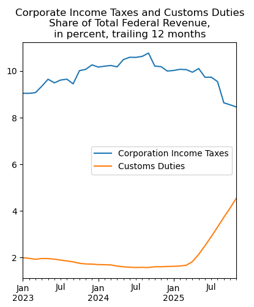

US Treasury Fiscal Data API with Python
The US Treasury Fiscal Data API offers data on federal finances, including revenue, spending, debt, and more. With Python, you can retrieve and analyze this data programmatically.
This example uses the Python requests and pandas packages to retrieve treasury data from the Monthly Treasury Statement and analyze federal revenue composition. If you're new to Python, the Getting Started guide covers setup and the basics.
Background
Treasury Fiscal Data
The Bureau of the Fiscal Service provides public access to federal financial data through fiscaldata.treasury.gov. The API allows access to datasets including the Monthly Treasury Statement, Daily Treasury Statement, debt data, and more.
API
The Fiscal Data API is a RESTful API that returns JSON data. You can filter results, specify date ranges, and paginate through large datasets. No registration or API key is required.
Example: Federal Revenue by Type
How has the composition of federal revenue changed recently? Corporate income taxes and customs duties are two categories worth watching—corporate taxes are a large and cyclical revenue source, while customs duties have grown sharply with recent changes in trade policy.
Import PackagesIn[1]:
import requests
import pandas as pdWe request data from table 9 of the Monthly Treasury Statement (MTS), which breaks down federal receipts and outlays by type. The filter parameter uses the API's :in: operator to return only rows matching our categories of interest. You can find the available field names and filter operators in the API documentation.
In[2]:
url = 'https://api.fiscaldata.treasury.gov/services/api/fiscal_service'
url += '/v1/accounting/mts/mts_table_9'
params = {
'filter': 'classification_desc:in:(Corporation Income Taxes,Customs Duties,Total)',
'page[size]': 800
}
r = requests.get(url, params=params)The API returns one row per category per month. We rename the columns for readability and remove line 33, which is total outlays—the table includes both receipts and outlays rows labeled "Total", so we filter by the source line number to keep only receipts.
In[3]:
rn = {'current_month_rcpt_outly_amt': 'Value', 'src_line_nbr': 'Line',
'classification_desc': 'Category'}
df = pd.DataFrame(r.json()['data']).rename(rn, axis=1).query('Line != "33"')
df['Date'] = pd.to_datetime(df['record_date'])
df['Value'] = df['Value'].astype(float)
df = df.sort_values('Date')Monthly fiscal data is seasonal—April is always a big revenue month (tax day), for example. A trailing 12-month sum smooths out this seasonality and shows the annual pace.
In[4]:
# Pivot so each category is a column, convert to trillions
data = (df.set_index(['Date', 'Category'])['Value']
.unstack().astype(float) / 1_000_000)
# Rolling 12-month sum to smooth seasonality
data = data.rolling(12).sum().dropna()Calculate each category as a share of total federal revenue and plot from 2023 onward.
In[5]:
c = ['Corporation Income Taxes', 'Customs Duties']
shares = data[c].divide(data['Total'], axis=0) * 100
shares.index.name = ''
shares.columns.name = ''
title = ('Corporate Income Taxes and Customs Duties\n'
'Share of Total Federal Revenue,\n'
'in percent, trailing 12 months')
shares.loc['2023-01-01':].plot(title=title, figsize=(4.5, 5))Out[5]:

Further Resources
- Fiscal Data API Documentation — endpoints, filtering, and pagination
- Available Datasets — browse all Treasury datasets including debt, interest rates, and daily statements
- BLS API Guide — employment and inflation data
- BEA API Guide — GDP and national accounts data